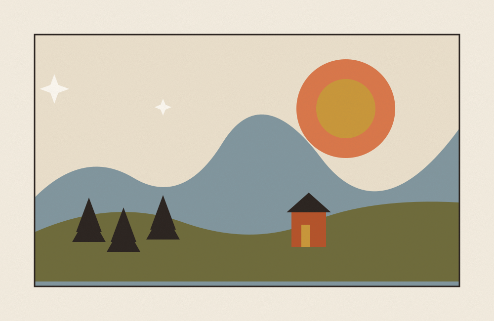

Drawing · sketchbook
An abstract study inspired by drawing and sketchbook practice.
03 / A PERSONAL PERSPECTIVE
Three abstract visual studies inspired by drawing, game worlds and cinema.
An abstract study inspired by drawing and sketchbook practice.

An abstract study inspired by drawing and sketchbook practice.

An abstract study inspired by drawing and sketchbook practice.
These are original abstract illustrations made for this portfolio, not personal photographs or finished class assignments.